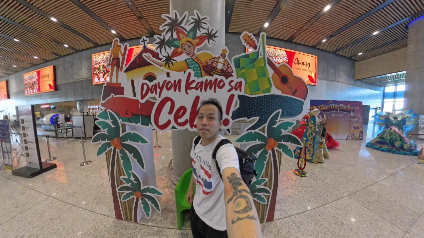
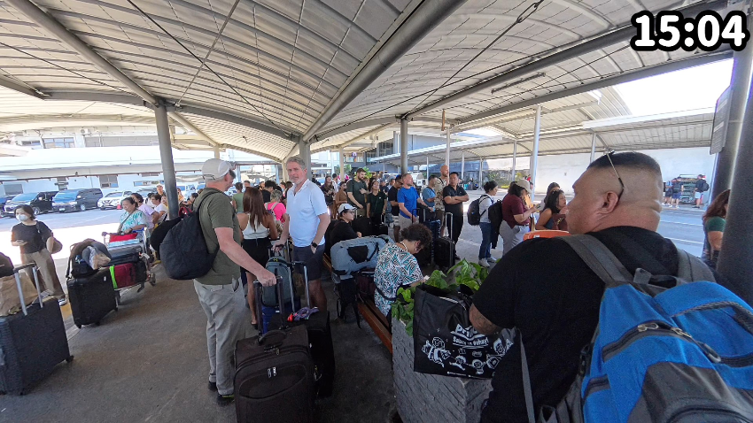
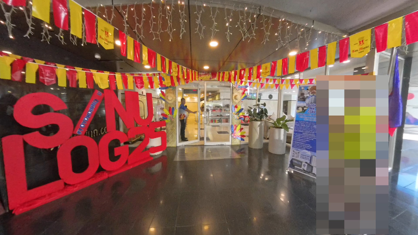
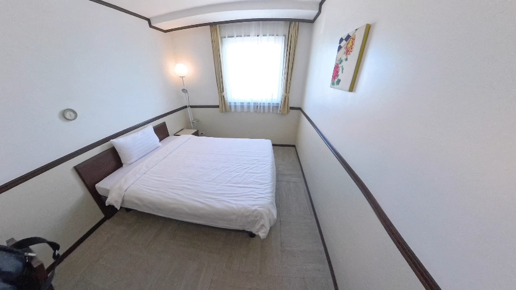
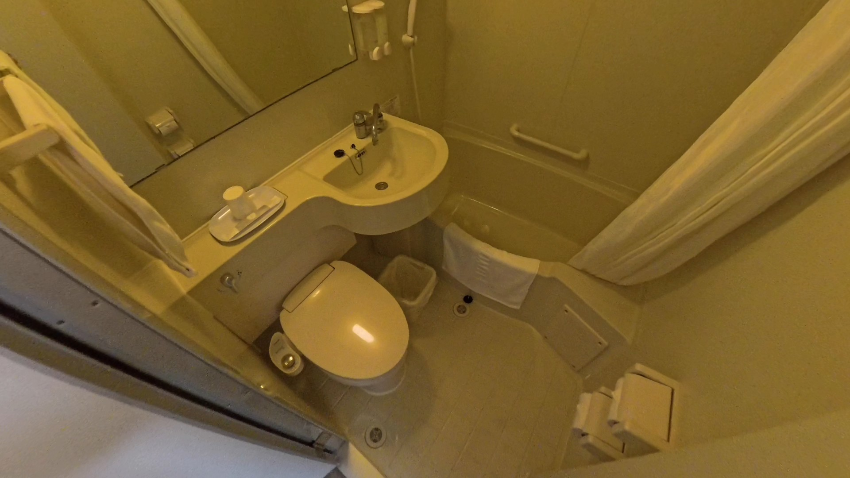
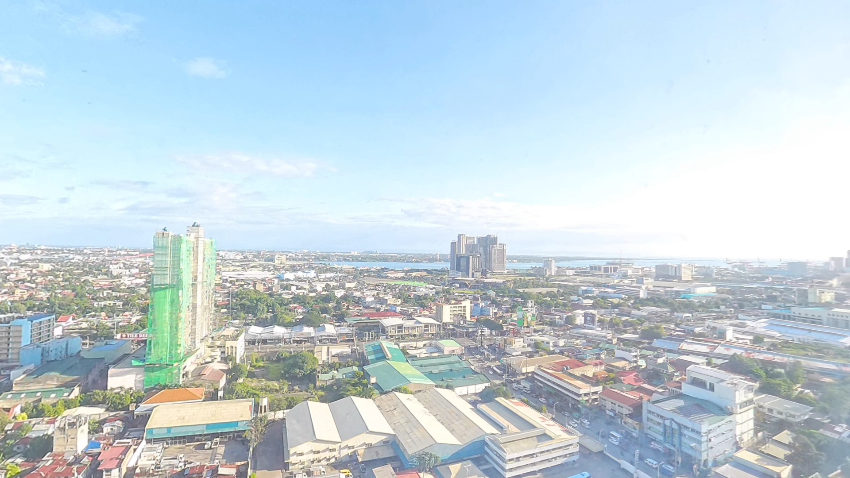
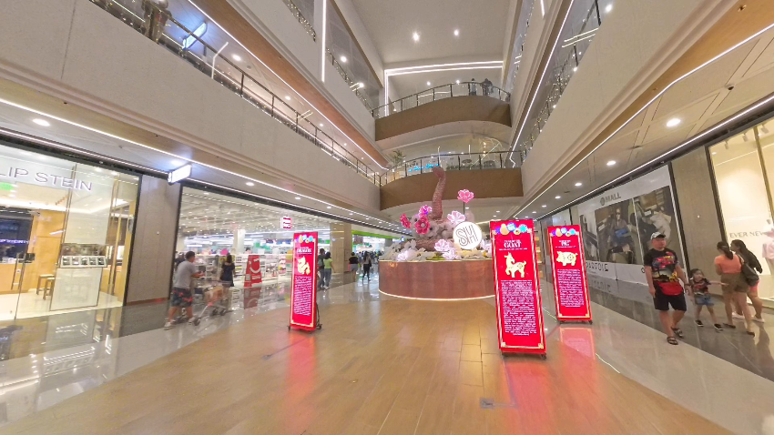
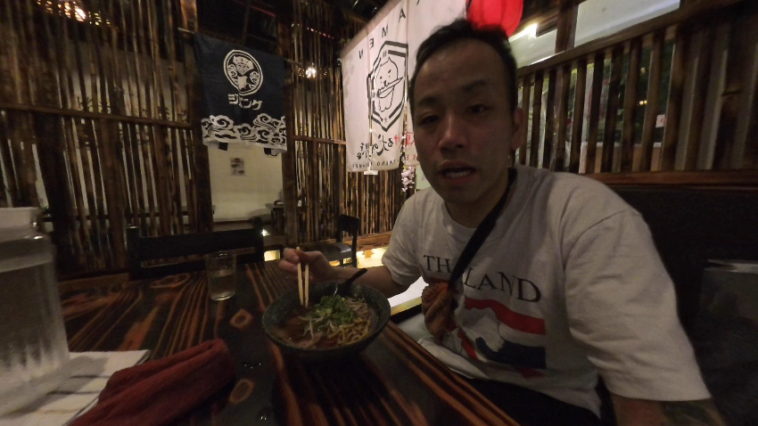
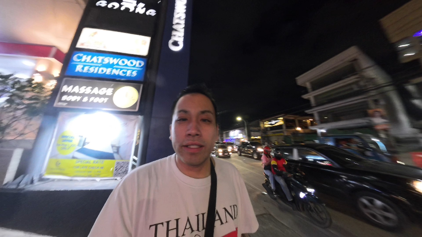

こんにちは、Tomoです！タイ旅行以来の海外旅行で、今回はフィリピンのセブ島に2泊4日の一人旅に来ています。前回セブに来たのは去年の7月くらいだったので、久しぶりの訪問にとてもワクワクしています。今回の旅行はTrip.comで予約しました。よく使っている予約サイトですが、今回も良い値段で取れました。
超格安チケットでセブへ
今回は本当にラッキーな買い物ができました。往復で29,400円という驚きの価格で直行便のチケットをゲット！こんな安い値段でセブに行けるなんて信じられません。
朝7:35、成田空港第2ターミナルに到着しました。飛行機は8:10発なのでかなり急いでいます。今回の荷物はリュックとお土産を入れた紙袋だけの軽装備。チェックインを済ませているのですぐに搭乗ゲートへ向かいます。
今回の旅行の目的は？単純に飲んで遊ぶだけです（笑）。ナイトライフを楽しみたい気分なんです。どこまで撮影できるか分かりませんが、できるだけ経験をシェアしていきますね！旅の様子はInsta360 X4で撮影しています。小型なのに360度撮影できるので旅行動画にぴったりです。
セブに到着

セブ・マクタン空港に現地時間の午後2:15に到着しました。フライトはほぼ定刻通りでしたが、私の荷物が最後の方に出てきてしまったので、少し時間がかかりました。
ちなみに、私の荷物はキャリーケースではなくリュックと紙袋だけという状態。きちんとしたバッグを持ってくるのを忘れてしまい、空港で購入した紙袋にRICAちゃんへのお土産の食べ物を入れています。チェックインカウンターで紙袋を預けたとき、スタッフの目が「お金ないの？」と言っているようで少し恥ずかしかったです。
タクシー待ちの長い列

本来ならGrabを使おうと思っていましたが、呼んでも30分以上待っても来ません。結局タクシー乗り場に行ったら、とんでもない長蛇の列が！シヌログ・フェスティバルの影響でしょうか。警官が整理している公式タクシー乗り場で、1時間半も待ちました。こんなに長く待ったのは初めてです。
やっと乗れたタクシーは、ちゃんとメーターを使ってくれる良心的なドライバーでした。初乗り運賃は40ペソと非常に安く、Grabの380ペソと比べると大差です。空港からホテルまでは205ペソで、適正価格だと思います。
東横インセブの部屋チェック

午後4時、ちょうどチェックイン時間に東横インセブに到着。フロントデスクは6階にあるようで、エレベーターで上がります。日本のブランドだけあって、エレベーター内の表示も日英両方あり、とても清潔です。
前回セブで泊まったホテルはひどかったんです。大きなゴキブリがいて、蟻もたくさんいて、アメニティもなく、シャワーからお湯も出ませんでした。今回はちゃんとした普通のホテルに泊まりたかったんです。
チェックインを済ませ、18階の部屋に案内されました。ホテルガイドによれば、会員のチェックアウトは12時、非会員は11時とのこと。10時かと思っていたので、ラッキーです。
ルームツアー！

部屋に入るとまずフロアがタイル張りのようなマット仕上げになっています。カーペットではなく、タイルという感じ。ベッドは一番安いシングルベッドプランを予約したはずですが、思ったより大きくて快適です。日本の東横インとほぼ同じで、とても清潔です。

バスルームはユニットバスでビジネスホテル的な雰囲気。清潔で、歯ブラシなどのアメニティも揃っています。コスパは最高で、一泊5000円程度なのに満足度が高いです。

窓からの眺めは一部スラム的な地域が見えますが、奥には高層ビルが見え美しいです。日本人旅行者、特に私のように短期滞在の人には本当におすすめできるホテルです。なお、海外のホテルでフリーWi-Fiを利用する際は、セキュリティとプライバシー保護のためにNordVPNを使用しています。公共のWi-Fiはとても危険なので、VPNは必須アイテムです。
近くのJモールを探索

ホテルを出るとすぐ右手にJモールがあり、とても便利な立地です。中に入ってみると、各フロアにはいろいろな店が並んでいます。
- 1階：ペットショップ、ドラッグストア、パン屋など小さな店舗が軒を連ねる
- 2階：UNIQLOなどのアパレルショップ、スーパーマーケット、Jollibee（ファストフード）
- 3階：主にアパレル、時計、アクセサリーなど
- 4階：スマートフォンなどの電子機器、映画館、アミューズメントエリア、アーケード

夕食はネオトーキョー内にあるラーメン店で食べました。醤油ラーメンが350ペソ（約1000円）とやや高め。味は悪くはないけど特別美味しいわけでもなく、この価格に見合うかと言われるとちょっと微妙でした。
夜の予定

LINEでRICAちゃんから連絡があり、一緒に食事して彼女の働くJTVに同伴しようと誘われましたが、正直に言うと遅刻でのペナルティを避けるため同伴してという意味だったと思うので、嫌でした。
次はB-PINKというJTVに行ってみようと思います。そこで少し飲んでから、Blueにも寄って、それからホテルに戻る予定です。
セブの夜はこれからが本番！次回は初日の夜がどうなるか、お楽しみに！